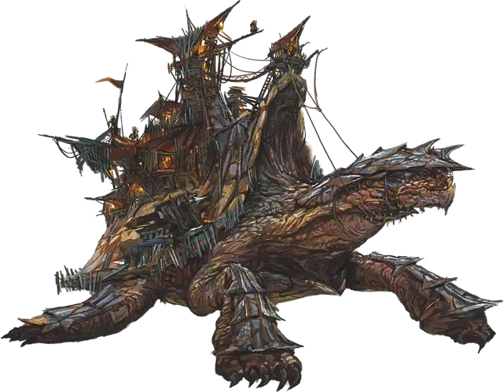

Мохоспин-Стюард
Mossback Steward
Громадный Монстр, без мировоззрения, именной НИП

Класс Доспеха 17 (природный доспех, 22 находясь в панцире)
Хиты 227 (13к20 + 91)
Скорость 20 футов
| мод | спас | ||
|---|---|---|---|
| СИЛ | 28 | +9 | +12 |
| ЛОВ | 3 | −4 | −4 |
| ТЕЛ | 25 | +7 | +10 |
| мод | спас | ||
|---|---|---|---|
| ИНТ | 12 | +1 | +1 |
| МДР | 17 | +3 | +3 |
| ХАР | 5 | −3 | −3 |
Навыки Восприятие +7, Магия +5, Природа +5, Проницательность +7, Убеждение +5
Иммунитет к урону яд
Иммунитет к состояниям отравление
Чувства тёмное зрение 60 футов, пассивное Восприятие 10
Языки понимает Общий, Гоблинский и Первичный, но не говорит, Телепатия 120 фт.
Опасность 8 (3900 опыта)
Бонус мастерства +3
Особенности
Амфибия. Черепаха может дышать и воздухом и под водой.
Врождённое колдовство. Базовой характеристикой Мохоспина является Мудрость (Сл спасброска от заклинаний 15). Он врождённо может накладывать следующие заклинания, не нуждаясь в материальных компонентах:
• Неограниченно: дружба [friends];
• 1/отдых: внушение [suggestion], предсказание [divination];
Массивная опора. Мохоспин может нести на своем панцире до 20 000 фунтов веса, но перемещается с половинной скоростью, если вес превышает 10 000 фунтов. Существа Среднего размера или меньше, могут перемещаться под черепахой, пока она не лежит ничком.
Любое существо под черепахой, когда она падает ничком, становится схваченным (Сл высвобождения 18). Пока захват не закончится, существо сбито с ног и опутано.
Действия
Укус. . Рукопашная атака оружием: +12 к попаданию, досягаемость 10 футов, одна цель. Попадание: 28 (3к12 + 9) дробящего урона.
Панцирная защита (перезарядка 4-6). Черепаха прячется в свой панцирь, падает ничком и получает бонус +5 к КД. Пока черепаха находится в своем панцире, её скорость становится равной 0 и не может быть увеличена. Действием черепаха может вылезти из своего панциря, после чего она перестаёт быть сбитой с ног.
Описание
Пустынные бесплодные земли и сырые болота являются домом для древних и массивных небосклонных черепах Восточного Винандира. Почти пятьдесят футов от носа до хвоста, и с привычкой оставаться неподвижной в течение длительного времени, небосклонную черепаху легко принять за невысокий холм из далека. Но когда эти впечатляющие существа поднимаются, чтобы начать своё передвижение, это зрелище внушает страх и благоговейный трепет в равной степени. Будучи всеядными существами невероятных размеров, эти падальщики предпочитают питаться мертвой растительностью, но используют все съедобные вещества, которые им попадаются.
Друг Мусорщиков. Гоблины востока называют этих величественных и медлительных зверей "кинеспаджи". Они уже давно поддерживают симбиотические отношения с обитателями Хорхаса. Небосклонные черепахи несут на себе мобильные поселения и могут выступать в качестве осадных орудий во время опасностей.